# Git Collaboration Basic @@@ ## What we will cover <div class="container"> <ul> <li>Quick intro to some <em>toolset</em></li> <li><em>Clone project repo</em> to start</li> <li>Make a <em>feature branch</em></li> </ul> <ul> <li>Save current work to <em>commit</em><br> check point locally</li> <li><em>Push</em> local branch to the cloud</li> <li>Open a <em>pull request</em> (PR)</li> </ul> </div> @@@ ## Quick intro to some toolset - [git command line(CLI)](https://docs.google.com/presentation/d/1an9Z9NO7kl_KlybsPXIKuObCORS3nb1BMt62Yas-mS0/edit?usp=sharing): a version control tool to keep track of file changes, it is NOT Github!!<br> <b style="font-size: 0.8em;">Click on the above link to see our previous git workshop slides</b> - [VS Code](https://code.visualstudio.com/download): a free source-code editor that has fairly good git support extension - [Gitkraken](https://www.gitkraken.com/download): a free Git GUI made by software company Axosoft. Easy to use, recommend! @@@ ## Clone project repo to start *Get a copy of the project code and stick the folder in your local machine* @@@ 1. Go to Code tab in your github repo 2. Click on Code button 3. Copy the clone link(usually https) 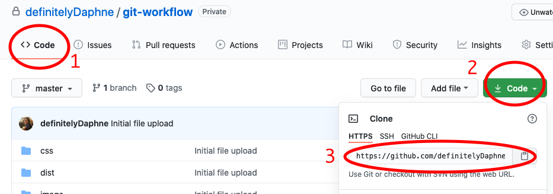 @@@ 4. Go to your terminal of the choice<br>i.e. zsh, bash, cmd, powershell 5. Navigate to the directory where<br> you would like the project folder to live 6. Enter this below command ```bash git clone <the_link_you_just_copied> ``` @@@ The command initiates the folder to be a **git repository** There is a hidden **.git** folder being created<br> which is responsible for tracking your file changes 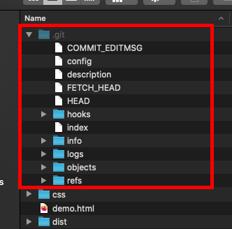 @@@ Now you have downloaded all the necessary code file ✨ Open the project folder with your favourite code editor/IDE<br> @@@ ## Make a feature branch *Make a safe playground for yourself* @@@ > A branch is like a parallel world where you can create commit without introducing bugs into production code @@@ ### First, check which branch you are at | Git command| VScode | Gitkraken | | ------------- |-------------| -----| | 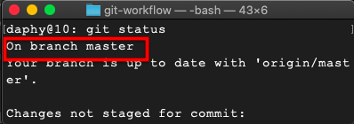| 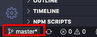| 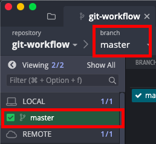| |<p>the first line of the output from git status command give you information about which branch you are at currently</p>|<p>at the left hand side bottom corner you can see the branch name</p>|<p>in Gitkraken, you can find branch status information from left hand and top tool bar</p> @@@ ### Next, create your new branch | <div style="display: flex;"></div>Git command| <img width=300 style="margin:0" />VScode | <img width=300 style="margin:0" />Gitkraken | | ---------------------- |----------------------| ----------------------| | <pre style="width:400px"><code lang="bash" class="bash hljs">git checkout -b new-branch-name</code></pre><div style="display: flex;justify-content:center"><p style="margin:0">OR</p></div><pre style="width:400px"><code lang="bash" class="bash hljs">git branch new-branch name</code></pre><pre style="width:400px"><code lang="bash" class="bash hljs">git checkout new-branch name</code></pre>| 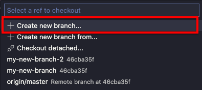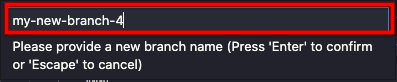| 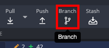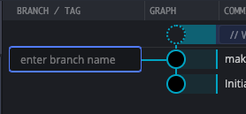| |<p>use checkout with -b flag will create the branch and then switch to the branch automatically. alternatively, you can create the branch using branch command and then checkout(switch) to the newly created branch</p>|<p>1. click on the branch at the left hand side bottom corner<br>2. select create new branch<br>3. type in new branch's name and then hit enter</li></ol></p>|<p>1. click on the branch at the top tool bar<br>2. type in new branch name into the prompt and then hit enter</p>| @@@ Now your code file and workspace are all setup *Happy coding : )* @@@ ## Save current work to commit<br> check point locally *I wrote some code, now what?* @@@ When you made change to the files `git` knows it and will instruct the editor to flag you For example, in VScode<br>the source control side bar will show a badge 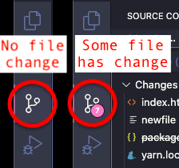 @@@ If you click on the source control tab<br> you'll see something like this 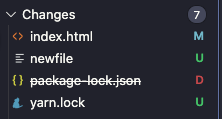 <p><span style="color:aqua">M</span> - means modified</p> <p><span style="color:forestgreen">U</span> - means updated, mostly adding file</p> <p><span style="color:red">D</span> - means deleted</p> @@@ If you choose to bury these changes underground <br>and never see them again Here's a very handy tool/button in VScode source control tab 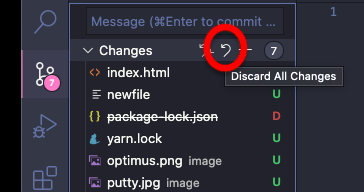 @@@ <div style="display: flex; justify-content:center"> <p style="text-align: left;"> <b>BUT!</b><br> If you're pretty happy with the changes<br> We will need to <em>save the work with git command</em> </p> </div> @@@ ### 1st Step: <br>add/stage the changes | Git command| VScode | Gitkraken | | ------------- |-------------| -----| | 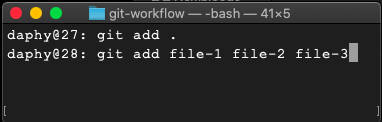| 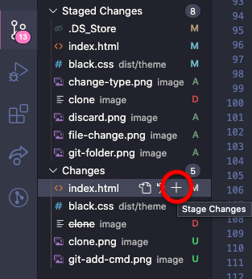| 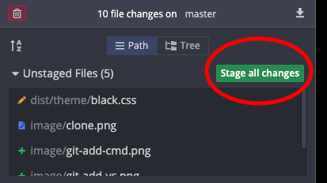| | <p>add . will add all the changes or you can specify the individual file with space separated</p>| <p>in the source control tab under changes section there is a button called "stage changes"</p> | <p>at the right hand side of the Gitkraken, you have green buttons to either "stage all changes" or "stage file(single)"</p> | @@@ > A staging step in git allows you to continue making changes to the working directory, and when you decide you wanna interact with version control, it allows you to record changes in small commits. @@@ ### 2nd Step: <br>commit the changes | Git command| VScode | Gitkraken | | ------------- |-------------| -----| | 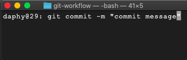| 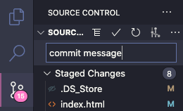| 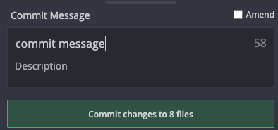| | <p>-m set the following argument to be the commit message. if you only enter git commit a vim editor will pop up, press "i" to enter insert mode, type your msg, hit "esc", type ":wq" to save.</p> | <p>in the source control tab there is a textbox for you to enter commit message, press enter to commit</p> | <p>at the right hand side bottom of the Gitkraken, you can type in commit message and/or the longer description</p>| @@@ > The "commit" command is used to save your changes to the LOCAL repository.<br><br>Your team won't be able to see your committed changes just yet @@@ <p style="font-size:1em;">Some Sidenotes:</p> - commit file size doesn't matter, do it as you wish - make commit message as *concise* and *descriptive* as possible - when add and commit, make sure you group the relevant changes in one batch. If the logic is separate, make another commit @@@ ## Push local branch to the cloud *So that your team can "checkout" your awesome code* @@@ ### Push commit(s) to the remote | Git command| VScode | Gitkraken | | ------------- |-------------| -----| | 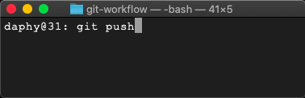| 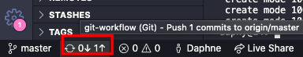| 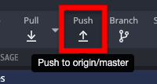| |<p>git push will send the local commit to the upstream remote branch, if upstream is not set it'll complain, follow the suggested fix from terminal</p> | <p>down the left hand side bottom you will see up arrow with some number, that means we have commits pending delivery, simply click on the arrow to push</p> | <p>at the top toolbar in Gitkraken, click on push button to push commits to the cloud, if the prompt pops up for you to choose upstream, accept and hit ok</p>| @@@ > The git push command is used to upload local repository content to a remote repository. Pushing is how you transfer commits from your local repository to a remote repo. <br><br> Now if you go to the project repo and switch to your branch, you should see it being updated @@@ <p style="font-size:1em;">Some Sidenotes:</p> - push to remote is important in collaboration, as your team will be able to see the latest changes - it is good for file backup too @@@ <p style="font-size: 0.8em; text-align:left"> Now feel free to commit and push throughout your developing process<br><br> Once you finish the feature assigned to you or you have completed a big task we will <em>make a pull request (PR)</em><br><br> </p> @@@ ## Open a pull request (PR) *Merge these pls..* @@@ > A pull request is basically signaling whoever's maintaining the project codebase that this bunch of files is ready to go into the master branch @@@ After the code being pushed up to the *remote feature branch* In the main project page you will see a *notification* suggesting making a pull request  Click on the green *Compare & pull request* button to initiate a pull request @@@ You will be redirecting to a page to fill out some more information 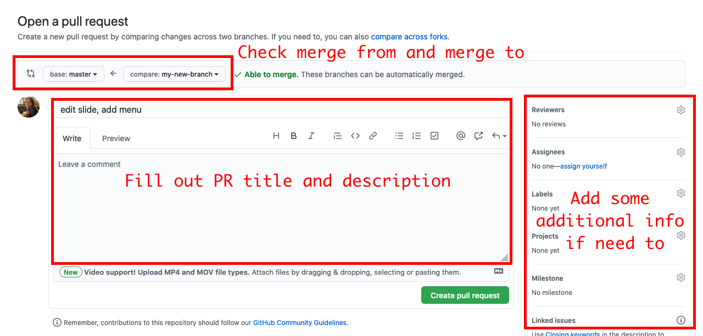 After completed, click on *Create pull request* button to submit @@@ Now your pull request has been officially filed The PRs record are accessible from the *Pull requests* tab 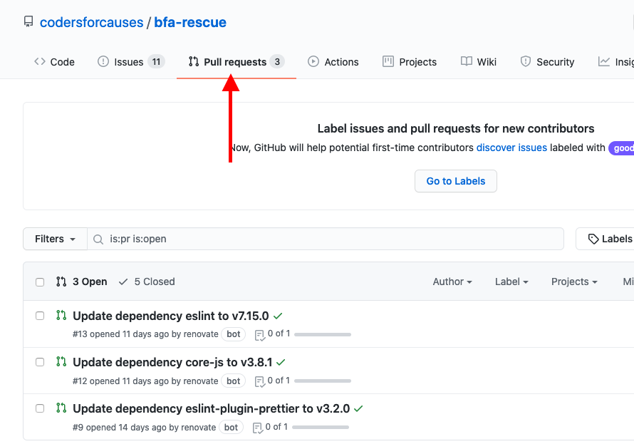 You can *edit*, *delete*, *comment* or even *add more code* to the PR you just created @@@ Once the PR has been reviewed by the repo maintainer Come back the the pull request page and accept to Merge By click on *Merge pull request* button 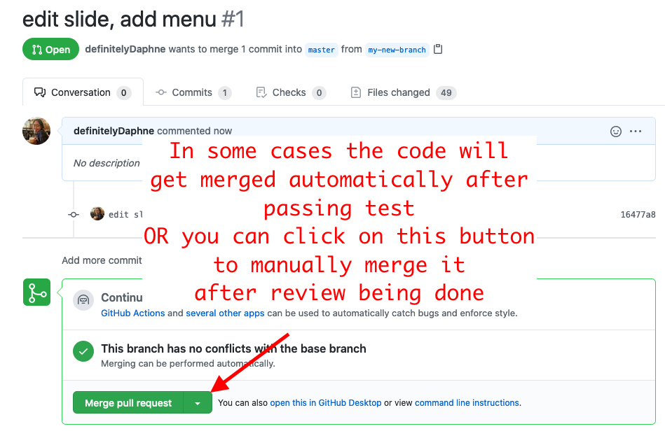 @@@ Congratulations And thanks for making contribution to the project 🥳 ## THE END